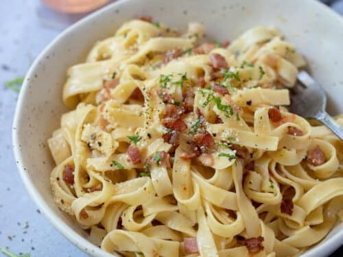

Some tasty carbonara!

Brief description.
This pasta is easy to make and scalable to feed as many people as you need! You can also add some of your own
ingredients with this recipe and see how you like it.
Ingredients:
- 700 Grams of chicken thighs.
- Creamy white sauce base.
- Fettucine pasta.
- 250 grams Baby spinach.
- Unsalted butter.
- Salt.
- Pepper.
- Garlic powder.
- Onion powder.
- Smoked paprika powder.
- Grated parmesan cheese.
- 200ml of thicken cream.
Steps:
- Preheat oven to 220 degrees celcius.
- Season chicken breasts with generous amount of all seasonings.
- Place onto baking paper, onto a baking tray and cook in oven for 30 minutes. (Flip at 15 minutes).
- When halfway through cooking the chicken (15 minutes) get a pan heated to med-high and bring a pot to boil.
- Once your pan is hot, put 1 tsb of minced garlic and 50 grams of unsalted butter into the pan, mix with a
whisk for 45 seconds.
- Once mixed, pour in your base white sauce and continue to stir while turning pan to a low-med heat.
- While mixing the sauce, place your fettucine pasta into the pot and occasionally stir; cook to taste.
- While mixing your base sauce, occasionally pour small amounts of thickened cream to the base sauce. Continue
until pasta is cooked.
- Once pasta is cooked, place it into a strainer with a small amount of oil and toss for 30 seconds.
- At this point, your chicken should be cooked. Take chicken out of the oven and place onto a chopping board,
cut into desired sizes.
- Once you have cut your chicken to your desired size, place baby spinach into the base sauce and mix for 45
seconds.
- Now place the pasta into the base sauce along with the chicken on top of the pasta.
- Mix for 1-2 minutes.
- Take pan off of heat and serve.